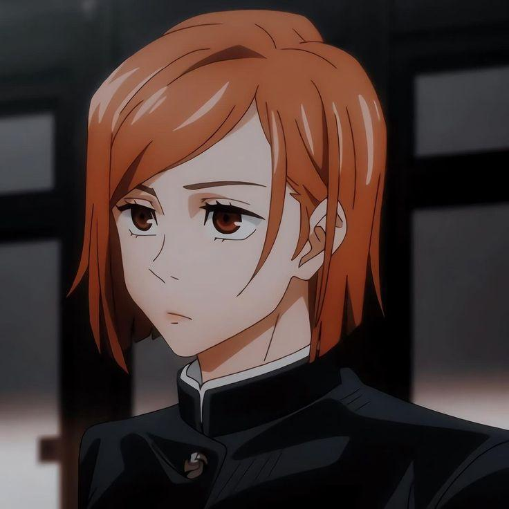
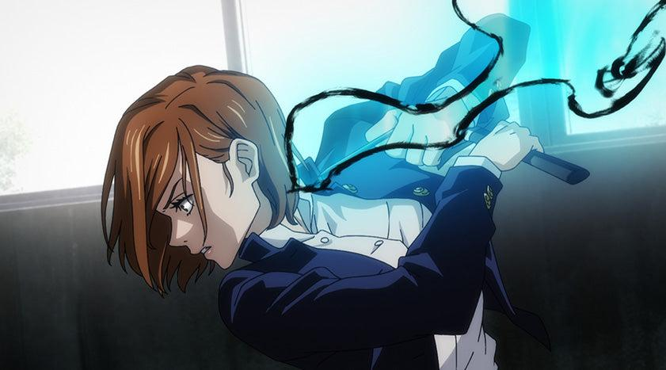
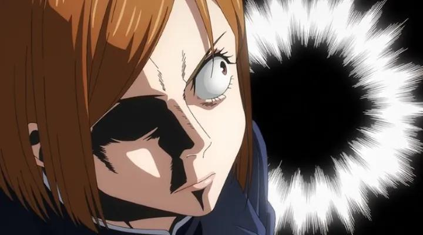
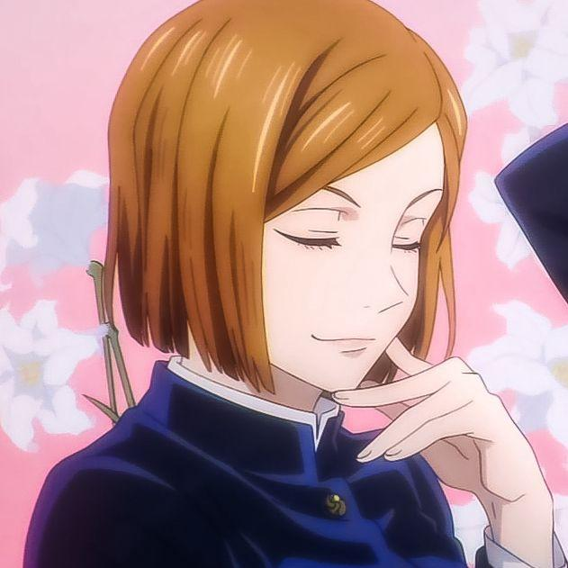

Profil

Nobara Kugisaki berasal dari daerah pedesaan dan memiliki tekad besar untuk hidup di kota besar seperti Tokyo. Ia meninggalkan kampung halamannya demi mengejar kehidupan yang ia inginkan, serta membuktikan bahwa dirinya mampu berdiri sendiri tanpa bergantung pada orang lain. Keputusan ini menunjukkan sifat mandiri dan ambisius yang sudah ia miliki sejak awal.
Sejak bergabung dalam Jujutsu Kaisen, Nobara mulai menjalani berbagai misi berbahaya sebagai penyihir jujutsu. Dalam perjalanannya, ia tidak hanya menghadapi kutukan yang kuat, tetapi juga mengembangkan kemampuan serta mentalnya. Pengalaman-pengalaman tersebut membentuknya menjadi petarung yang semakin tangguh dan percaya diri.
Kemampuan

Sebagai penyihir jujutsu, Nobara menggunakan teknik khas bernama Straw Doll Technique yang memanfaatkan palu dan paku sebagai media serangan. Ia dapat menyerang musuh secara langsung maupun tidak langsung dengan menghubungkan energi kutukan melalui benda tertentu, menjadikannya sangat efektif dalam berbagai situasi pertempuran.
Selain itu, Nobara memiliki ketahanan mental yang tinggi serta keberanian dalam menghadapi musuh yang jauh lebih kuat. Ia tidak mudah panik dan mampu tetap fokus dalam kondisi berbahaya. Kombinasi antara teknik unik, strategi, dan mental yang kuat membuatnya menjadi salah satu karakter yang berbahaya di medan pertempuran.
Karakter dan Kepribadian

Nobara memiliki sifat yang tegas, percaya diri, dan terkadang terlihat keras kepala. Namun di balik itu, ia juga memiliki sisi peduli terhadap teman-temannya. Ia tidak suka diremehkan dan selalu berusaha membuktikan kemampuannya. Prinsip hidupnya yang kuat membuatnya tampil berbeda dibandingkan karakter lain, terutama dalam hal bagaimana ia memandang dirinya sebagai perempuan yang tidak ingin dibatasi oleh standar tertentu.
Peran dalam Cerita

Dalam Jujutsu Kaisen, Nobara memainkan peran penting dalam berbagai misi melawan kutukan. Ia sering terlibat dalam pertarungan sengit dan menjadi bagian dari tim yang solid bersama Yuji dan Megumi. Kehadirannya tidak hanya menambah kekuatan tim, tetapi juga memberikan warna tersendiri dalam dinamika cerita, baik melalui aksi maupun interaksinya dengan karakter lain.
Fakta Menarik
Nobara Kugisaki dikenal sebagai salah satu karakter perempuan yang menonjol dalam Jujutsu Kaisen karena kepribadiannya yang kuat dan berbeda dari stereotip karakter perempuan pada umumnya. Ia memiliki gaya bertarung yang unik menggunakan palu dan paku, sesuatu yang jarang ditemukan dalam anime sejenis. Selain itu, Nobara juga memiliki selera fashion yang tinggi dan tetap memperhatikan penampilannya meskipun berada di tengah pertarungan, menjadikannya karakter yang ikonik dan mudah diingat oleh para penggemar.